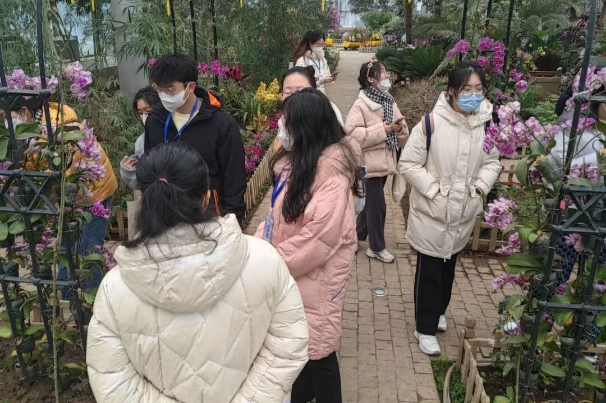

共赴冰雪之约，拥抱冬奥文化

行者无疆·踏冰逐梦
一
通过沈阳美术馆实地走访以及对面塑大师刘吉程线上专访，中国人自古对冰雪赋予的特殊情感得到了深刻地确认。冰是坚韧的象征，而雪是纯净、祥和、静谧的代表，“我无毫发瑕，苦心怀冰雪”、“骨相岩岩松梅竹，精神凛凛冰雪霜”，无论从郎世宁的《弘历雪景行乐图》还是雕刻11位冬奥健儿的《冰雪英雄》，都对冰雪文化有着深深地民族认同，冰雪文化的基因，也在血脉中悄然苏醒。
冰雪文化情缘
二
“‘冰天雪地也是金山银山’、‘三亿人上冰雪’的号召正在一步步实现。”棋盘山冰雪综合产业工作人员如是说。走访过沈阳市奥体冰雪嘉年华、世博园以及棋盘山冰雪产业相关的旅游景区，儿童与年轻人对滑冰、滑雪的热情扑面而来。“冰雪净聪明，雷霆走精锐。”在冰雪运动中培养健康生活方式、强身健体、磨炼品格，将北方先民从了解冰雪到驯服冰雪的自我超越再度进行时代传承，不断完善。
冰雪体育精神
三
后疫情时代下，旅游产业的自我复苏以及季节性旅游景区创新的思考引起了行者无疆实践团的对冰雪文化另一维度的注目。在实地调研过程中，我们提出如何在南北咽喉之地的沈阳打造特色综合性、前瞻性的冰雪产业，以及如何综合人文地理与现象级互联网宣传打造冰雪文化盛宴，让更多南来北往的游客真正深入冰雪、喜爱冰雪，是值得思考与解决的问题。
四
走访过沈阳故宫，也贴近现实百姓需求，通过乾隆的《冰嬉赋》、《满文老档》记载的作为“国家典制”的冰嬉，我们更能了解除了冰上竞技性之外的“皇恩浩荡”、“长治久安”的政治意图，以及滑冰项目在清朝的逐渐成熟。民间的项目“冰上蹴鞠”、“冰上龙舟”、“抽冰嘎”等也凝聚着民族的性格、审美情趣以及思维方式。


行
者
这个冬天我们一起踏冰逐梦！
来源 | 行者无疆实践团
图片 | 行者无疆实践团
文字 | 丁稼桐 崔雨琪
排版 | 崔雨琪
审核 | 崔雨琪